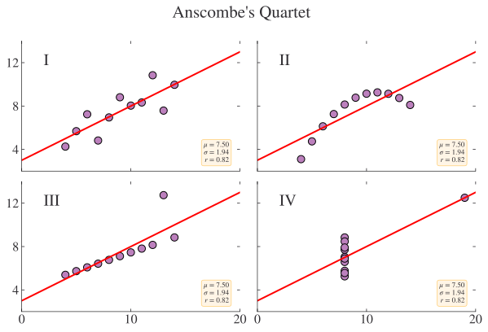
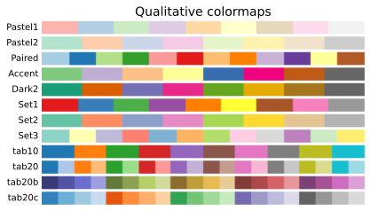
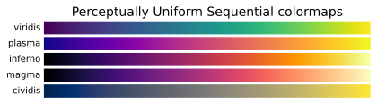
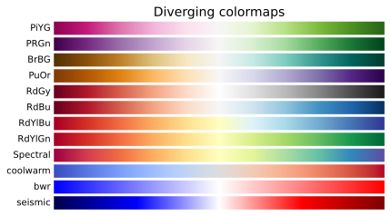

import matplotlib.pyplot as plt
import numpy as np
import pandas as pd
# Set seed for random numbers
seed_for_prng = 78557
prng = np.random.default_rng(
seed_for_prng
) # prng=probabilistic random number generatorIntro to Data Visualisation
Introduction
In this chapter, you’ll get a bit of background on data visualisation and lots of pointers to both further chapters and other visualisation resources.
There are a plethora of options (and packages) for data visualisation using code. First, though a note about the different philosophies of data visualisation. There are broadly two categories of approach to using code to create data visualisations: imperative, where you build what you want, and declarative, where you say what you want. Choosing which to use involves a trade-off: imperative libraries offer you flexibility but at the cost of some verbosity; declarative libraries offer you a quick way to plot your data, but only if it’s in the right format to begin with, and customisation may be more difficult.
There are also different purposes of data visualisation. It can be useful to bear in mind the three broad categories of visualisation that are out there:
exploratory
scientific
narrative
Python excels at exploratory and scientific visualisation. The tools for narrative visualisation are not as good as they could be for making common chart types efficiently, but did receive a big boost with the release of the lets-plot library, which is covered in Chapter Easy Data Visualisation for Tidy Data with Lets-Plot. And Python is blessed with perhaps the most powerfully flexible data visualisation package anywhere, matplotlib, in which you can always get the effect you want (with some work). matplotlib is covered in Chapter Powerful Data Visualisation with Matplotlib.
Exploratory Visualisation
The first of the three kinds of vis, exploratory visualisation, is the kind that you do when you’re looking and data and trying to understand it. Just plotting the data is a really good strategy for getting a feel for any issues there might be. This is perhaps most famously demonstrated by Anscombe’s quartet: four different datasets with the same mean, standard deviation, and correlation but very different data distributions.
(First let’s import the packages we’ll need:)
Anscombe’s quartet:
x = [10, 8, 13, 9, 11, 14, 6, 4, 12, 7, 5]
y1 = [8.04, 6.95, 7.58, 8.81, 8.33, 9.96, 7.24, 4.26, 10.84, 4.82, 5.68]
y2 = [9.14, 8.14, 8.74, 8.77, 9.26, 8.10, 6.13, 3.10, 9.13, 7.26, 4.74]
y3 = [7.46, 6.77, 12.74, 7.11, 7.81, 8.84, 6.08, 5.39, 8.15, 6.42, 5.73]
x4 = [8, 8, 8, 8, 8, 8, 8, 19, 8, 8, 8]
y4 = [6.58, 5.76, 7.71, 8.84, 8.47, 7.04, 5.25, 12.50, 5.56, 7.91, 6.89]
datasets = {"I": (x, y1), "II": (x, y2), "III": (x, y3), "IV": (x4, y4)}
fig, axs = plt.subplots(
2,
2,
sharex=True,
sharey=True,
figsize=(10, 6),
gridspec_kw={"wspace": 0.08, "hspace": 0.08},
)
axs[0, 0].set(xlim=(0, 20), ylim=(2, 14))
axs[0, 0].set(xticks=(0, 10, 20), yticks=(4, 8, 12))
for ax, (label, (x, y)) in zip(axs.flat, datasets.items()):
ax.text(0.1, 0.9, label, fontsize=20, transform=ax.transAxes, va="top")
ax.tick_params(direction="in", top=True, right=True)
ax.plot(x, y, "o")
# linear regression
p1, p0 = np.polyfit(x, y, deg=1) # slope, intercept
ax.axline(xy1=(0, p0), slope=p1, color="r", lw=2)
# add text box for the statistics
stats = (
f"$\\mu$ = {np.mean(y):.2f}\n"
f"$\\sigma$ = {np.std(y):.2f}\n"
f"$r$ = {np.corrcoef(x, y)[0][1]:.2f}"
)
bbox = dict(boxstyle="round", fc="blanchedalmond", ec="orange", alpha=0.5)
ax.text(
0.95,
0.07,
stats,
fontsize=9,
bbox=bbox,
transform=ax.transAxes,
horizontalalignment="right",
)
plt.suptitle("Anscombe's Quartet")
plt.show()
Exploratory visualisation is usually quick and dirty, and flexible too. Some exploratory data viz can be automated, and some of the packages you’ll see later in the chapter on Exploratory Data Analysis can do this. Beyond you and perhaps your co-authors/collaborators, not many other people should be seeing your exploratory visualisation.
Scientific Visualisation
The second kind, scientific visualisation, is the prime cut of your exploratory visualisation. It’s the kind of plot you might include in a more technical paper, the picture that says a thousand words. I often think of the first image of a black hole by Akiyama et al. (2019) as a prime example of this (made with matplotlib!) You can get away with having a high density of information in a scientific plot and, in short format journals, you may need to. The journal Physical Review Letters, which has an 8 page limit, has a classic of this genre in more or less every issue. Ensuring that important values can be accurately read from the plot is especially important in these kinds of charts. But they can also be the kind of plot that presents the killer results in a study; they might not be exciting to people who don’t look at charts for a living, but they might be exciting and, just as importantly, understandable by your peers.
Narrative Visualisation
The third and final kind is narrative visualisation. This is the one that requires the most thought in the step where you go from the first view to the end product. It’s a visualisation that doesn’t just show a picture, but gives an insight. These are the kind of visualisations that you might see in the Financial Times, The Economist, or on the BBC News website. They come with aids that help the viewer focus on the aspects that the creator wanted them to (you can think of these aids or focuses as doing for visualisation what bold font does for text). They’re well worth using in your work, especially if you’re trying to communicate a particular narrative, and especially if the people you’re communicating with don’t have deep knowledge of the topic. You might use them in a paper that you hope will have a wide readership, in a blog post summarising your work, or in a report intended for a policymaker.
You can find more information on the topic in the Narrative Data Visualisation chapter.
Quick guide to data visualisation
Addressing data visualisation, a huge topic in itself, is definitely out of scope for this book! But it’s worth discussing a few general pointers at the outset that will serve you very well if you follow them.
A picture may tell a 1000 words, but you’ve got to be a bit careful about what those words are. The first question you should ask yourself when it comes to data visualisation is ‘what does this plot tell the viewer?’, ie what do you want people to take away from your chart. That nugget of information should be as apparent as possible from the plot. Then you want to ensure that people do take away what you meant them to; the viewer should be left in little doubt about what you are saying.
Another factor to bear in mind is that papers typically don’t have more than, say, ten plots in them–and frequently fewer than that. So each one must count and advance the narrative of your work somehow. (Easier to say, hard to do in practice.) As an example, if you have data that are normally distributed, and you want to show this, it’s probably not worth showing it on a plot. But if you had two distributions whose differences were important for the overall story you were telling, that might be something to highlight.
Then there are more practical matters: is this plot better done as a scatter plot or a line? Should I stack my bar chart or split out the contributions? Those questions address the type of plot you’re creating. For example, if you have observations that are independent from one another, with no auto-correlation along the x-axis, a scatter plot is more appropriate than a line chart. However, for time series, which tend to exhibit a high degree of auto-correlation, a line chart could be just the thing. As well as the overall type, for example scatter plot, you can think about adding more information through the use of colours, shapes, sizes, and so on. But my advice is always to be sparing with extra dimensions of information as it very quickly becomes difficult to read. In most cases, an x-axis, a y-axis, and, usually, one other dimension (eg colour) will be the best option.
Once you’ve decided on the type of chart, you can then think about smaller details. Unfortunately, lack of labels is endemic in economics (“percent of what!?”, I cry at least three times a day). Always make what you’re plotting clear and, if it has units, express them (eg “Salary (2015 USD)”). Think carefully about the tick labels to use too; you’ll want something quite different for linear versus log plots. Titles can be helpful too, if the axes labels and the chart by themselves don’t tell the whole story.
Then, if there are very specific features you’d like to draw attention to, you can achieve this with text labels (as used liberally in the data visualisations you’ll see in newspapers like the Financial Times), greying out all but the most interesting data point, etc.; anything that singles out one part of the chart as the interesting one. A common trick is to plot the less important features with greater transparency and the important line/point/bar with solid colour. These all have the effect of drawing the eye straight to where it should spend the most time.
This is just the briefest of brief overviews of what you should bear in mind for good visualisation; I highly recommend the short and delightful Fundamentals of Data visualisation if you’d like to know more.
In terms of further resources to help you choose the right plot for the occassion, you can’t go too far wrong than the Financial Times Visual Vocabulary of charts. And, please, please use vector graphics whenever you can!
Colour
This section has benefitted from this blog piece on visualisation and colour, and you can find more information there.
Colours often make a chart come alive, but, when encoding differences with colour, think carefully about what would serve your audience and message best. It’s best not to use colour randomly, but to choose colours that either add information to the chart or get out of the way of the message. Often, you’ll want to draw your colours from a ‘colour palette’, a collection of different colours that work together to create a particular effect. The best colour palettes take into account that colour blindness is a problem for many people, and they remain informative even when converted to greyscale.
One of the most popular Python visualisation libraries, matplotlib, comes with a wide range of colour palettes available here and you can find another good package for colour palettes here.
Categorical Data
For (unordered) categorical data, visually distinct colour palettes (also known as qualitative palettes) are better. The basic rule is that you should use distinct hues when your values don’t have an inherent order or range. Note that this does not include Likert scales (“strongly agree, agree, neutral, disagree, strongly disagree”), because even though there are distinct categories, there is an order to the possible responses.
Here are some examples of the qualitative hues available in the visualisation package matplotlib.
# remove-input
cmaps = [
(
"Perceptually Uniform Sequential",
["viridis", "plasma", "inferno", "magma", "cividis"],
),
(
"Sequential",
[
"Greys",
"Purples",
"Blues",
"Greens",
"Oranges",
"Reds",
"YlOrBr",
"YlOrRd",
"OrRd",
"PuRd",
"RdPu",
"BuPu",
"GnBu",
"PuBu",
"YlGnBu",
"PuBuGn",
"BuGn",
"YlGn",
],
),
(
"Sequential (2)",
[
"binary",
"gist_yarg",
"gist_gray",
"gray",
"bone",
"pink",
"spring",
"summer",
"autumn",
"winter",
"cool",
"Wistia",
"hot",
"afmhot",
"gist_heat",
"copper",
],
),
(
"Diverging",
[
"PiYG",
"PRGn",
"BrBG",
"PuOr",
"RdGy",
"RdBu",
"RdYlBu",
"RdYlGn",
"Spectral",
"coolwarm",
"bwr",
"seismic",
],
),
("Cyclic", ["twilight", "twilight_shifted", "hsv"]),
(
"Qualitative",
[
"Pastel1",
"Pastel2",
"Paired",
"Accent",
"Dark2",
"Set1",
"Set2",
"Set3",
"tab10",
"tab20",
"tab20b",
"tab20c",
],
),
(
"Miscellaneous",
[
"flag",
"prism",
"ocean",
"gist_earth",
"terrain",
"gist_stern",
"gnuplot",
"gnuplot2",
"CMRmap",
"cubehelix",
"brg",
"gist_rainbow",
"rainbow",
"jet",
"turbo",
"nipy_spectral",
"gist_ncar",
],
),
]
gradient = np.linspace(0, 1, 256)
gradient = np.vstack((gradient, gradient))
def plot_color_gradients(cmap_category, cmap_list):
# Create figure and adjust figure height to number of colormaps
with plt.style.context("default"):
nrows = len(cmap_list)
figh = 0.35 + 0.15 + (nrows + (nrows - 1) * 0.1) * 0.22
fig, axs = plt.subplots(nrows=nrows, figsize=(6.4, figh))
fig.subplots_adjust(
top=1 - 0.35 / figh, bottom=0.15 / figh, left=0.2, right=0.99
)
axs[0].set_title(cmap_category + " colormaps", fontsize=14)
for ax, name in zip(axs, cmap_list):
ax.imshow(gradient, aspect="auto", cmap=plt.get_cmap(name))
ax.text(
-0.01,
0.5,
name,
va="center",
ha="right",
fontsize=10,
transform=ax.transAxes,
)
# Turn off *all* ticks & spines, not just the ones with colormaps.
for ax in axs:
ax.set_axis_off()
plt.show()
for cmap_category, cmap_list in cmaps[5:6]:
plot_color_gradients(cmap_category, cmap_list)
Continuous Colour Scales
Continuously varying data need a sequential colour scale, but there are two types: sequential and diverging
For data that vary from low to high, you can use a sequential colourmap. Best practice is to use a sequential colourmap that is perceptually uniform. The authors of the Python package matplotlib developed several perceptually uniform colourmaps that are now widely used, not just in Python, but in other languages and contexts too (Nuñez et al. 2018). These are the ones built-in to matplotlib:
# remove input
for cmap_category, cmap_list in cmaps[:1]:
plot_color_gradients(cmap_category, cmap_list)
Do not use the JET colourmap: it is very much not perceptually uniform. If you do want a rainbow-like sequential and perceptually uniform colourmap, then turbo, developed by Google, is as good a choice as you’re going to find. You can find turbo within matplotlib.
# remove-input
def show_one_colourmap(cmap):
fig, ax = plt.subplots(figsize=(6.4, 0.3))
ax.text(
-0.01, 0.5, cmap, va="center", ha="right", fontsize=10, transform=ax.transAxes
)
ax.imshow(gradient, aspect="auto", cmap=plt.get_cmap(cmap))
ax.set_axis_off()
plt.show()
show_one_colourmap("turbo")Sometimes a diverging colourmap will be more appropriate for your data. These are also called bipolar or double-ended color scales and, instead of just going from low to high, they tend to have a default middle value (often brighter) with values either side that are darker in different hues. Diverging color scales are often used to visualise negative and positive differences relative to zero, election results, or Likert scales (for example, “strongly agree, agree, neutral, disagree, strongly disagree”).
These are the built-in ones in matplotlib:
# remove input
for cmap_category, cmap_list in cmaps[3:4]:
plot_color_gradients(cmap_category, cmap_list)
So how do you choose between a diverging or sequential colour scale? Divering colour scales work better when i) there’s a meaningful middle point, ii) there are extremes that you want to emphasise, iii) when differences are more of the story than levels, and iv) when you don’t mind that people will have to put in a bit of extra effort to understand the chart relative to the typically more intuitive sequential colour scale.
Finally, this book uses a colour-blind friendly qualitative scheme (you can find the list of colours in this file).
# remove input
from matplotlib.colors import LinearSegmentedColormap
colours = plt.rcParams["axes.prop_cycle"].by_key()["color"]
cmap = LinearSegmentedColormap.from_list(
"coding for economists: qualitative colourmap", colours, N=len(colours)
)
fig, ax = plt.subplots(figsize=(6.4, 0.3))
ax.imshow(gradient, aspect="auto", cmap=plt.get_cmap(cmap))
ax.text(
-0.01,
0.5,
"Coding for Economists",
va="center",
ha="right",
fontsize=10,
transform=ax.transAxes,
)
ax.set_axis_off()
plt.show()Libraries for Data Visualisation
In subsequent chapters, we’ll take a look at making visualisations with several of these libraries. Our overall advice is to use lets-plot for declarative plotting and matplotlib for imperative plotting due to their high quality, flexibility, and likelihood of long term support. You can find lots of examples of the kinds of visualisations these packages produce side-by-side over in Common Plots I.
The most important and widely used data visualisation library in Python is matplotlib. It was used to make the first image of a black hole by Akiyama et al. (2019) and to image the first empirical evidence of gravitational waves by Abbott et al. (2016). matplotlib is an imperative visualisation library: you specify each part of what you want individually to build up an entire picture. It’s perhaps the easiest to get started with and the most difficult to master. As well as making plots, it can also be used to make diagrams, animations, and 3D visualisations (which you should use sparingly, if at all). Reach for it if you like to have very fine-grained control over your plots, for example, you’re making a bespoke or unusual chart, you need to control the look of a chart very carefully, you’re making something that requires more graphical design, or you prefer to build up your plots from elemental pieces. You can explore it further in Powerful Data Visualisation with Matplotlib.
lets-plot is a fantastic and extremely high-quality declarative library that works especially well with data that are in a tidy format (one row per observation, one column per variable). It adopts a grammar of graphics approach. What this means is that all visualisations begin with the same command, ggplot, and are combinations of layers that address different aspects of a plot, for example points or lines, scale, labels, and so on. Use it if you want one of a long list of standard charts produced quickly and to a high standard, and if your data are in a tidy format. You can find out more about it in Easy Data Visualisation for Tidy Data with Lets-Plot.
plotly express is another declarative-leaning library that’s suited to web apps and dashboards.
seaborn is a popular declarative library that builds on maplotlib and works especially well with data that are in a tidy format (one row per observation, one column per variable). seaborn is still a work in progress, but you can find information on it in Data Visualisation with Seaborn.
plotnine is another declarative plotting library that adopts a grammar of graphics approach and uses a ggplot command, but it’s not quite as full featured as lets-plot. You can read more about it in Data Visualisation using the Grammar of Graphics with Plotnine.
altair is yet another declarative plotting library for Python! It’s most suited to interactive graphics on the web, and produces really beautiful charts. Under the hood, it calls a javascript library named Vega-Lite that’s the sort of thing newspaper data visualisation units might use to make their infographics.
pandas also has built-in plotting functions that you will have seen in the data analysis part of this book. They are of the form df.plot.* where * could be, for example, scatter. These are convenience functions for making a quick plot of your data and they actually use matplotlib; we won’t see much of these here but you can find them in the data analysis chapter.
We’re going to start this chapter by finding out a little bit more about each of these data visualisation libraries before looking at some examples of how to make specific plots with all the main libraries. We’ll end by looking at some more interesting and advanced plots.
Other Data Visualisation Tools
There are tons of data visualisation libraries in Python, so many that most cannot be featured in great detail. Here are a few more that may be worth looking into depending on what you need.
Here’s a quick run down of the other libraries that are available:
- proplot aims to be “A lightweight matplotlib wrapper for making beautiful, publication-quality graphics”, though the style is more similar to how people might make plots in the hard sciences rather than the social sciences. The point of this library is to take some of the verbosity out of matplotlib.
- if you’re using very big data in machine learning models, it might be worth looking at Facebook’s hiplot
- Seaborn image does for image data what seaborn does for numerical and categorical data
- Lit provides an open-source platform for visualization and understanding of NLP models (very impressive)
- Wordcloud does exactly what you’d expect (but use word clouds very sparingly!)
- VisPy for very large datasets plotted with WebGL and GPU acceleration.
- PyQtGraph, a pure-Python graphics library for PyQt5/PySide2 and intended for use in (heavy) mathematics / scientific / engineering applications (not very user friendly).
- bokeh offers interactive web plotting in Python.
- HoloViews, a library dsigned to make data analysis and visualization seamless and simple with very concise commands (builds on bokeh and matplotlib).
- YellowBrick for visualisations of machine learning models and metrics.
- facets for quickly visualising machine learning features (aka regressors). Also useful for exploratory data analysis.
- chartify, Spotify’s quick plotting library for data scientists.
- scienceplots provides scientific plotting styles–some associated with specific journals–for Matplotlib.
- colour provides professional level colour tools for Python.
- palettable has extra colour palettes that work well with Matplotlib.
- colorcet is a collection of perceptually uniform colourmaps.
- missingno for visualization of missing data.
You can see an overview of all Python plotting tools at PyViz.
Review
If you know:
- ✅ a little bit about how to use data visualisation; and
- ✅ what some of the most popular libraries for data vis are in Python
then you are well on your way to being a whizz with data vis!